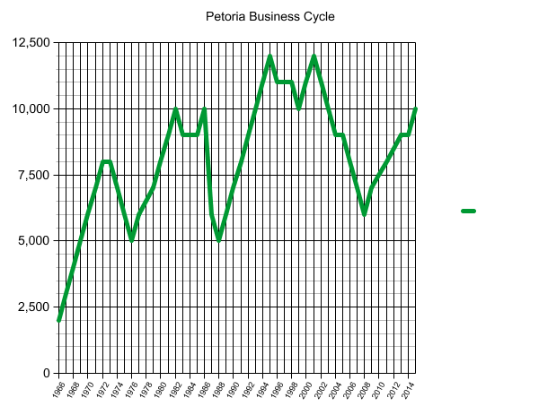

The economy is the base to any good country! Our economy is mainly driven by tourism and exporting Coco beans. Our GDP is 86% higher than the countries in our region.
Economics
Here in Petoria, we have a mixed market economy very similar to the United States. The government controls the banks and other important jobs that affect all people, and we allow our citizens free rangle in any business adventrures they choose.

GDP
Our GDP lies at about 860.500 billion dollars, ranked in between The Netherlands and Indonesia (Data calculated in 2016) [GDP is calculated by the following formula: GDP= C+I+G+F].
Our main export is cocoa beans, which we send to 17 different countries.
Our main import is bananas and various other fruits, which mainly come from Europe / Southern America.

Inflation
Inflation is defined as the general price level of goods and services within a country.
Our inflation rate, as of 2016, is about 2.6% inflation. Our economy has experienced expansion over the past several decades; meaning that our GDP rises while our other macroeconomic factors such as the unemployment rate decreases.

Fiscal Policy
Our oligarchic government comes together annually to decide the rates of fiscal policy. In 2016, the board of governors decided on a band of between 18,000 and 30,000 ZAR per independant head of a household's income.
Qualifying widowers or appropriated government officials may be exempt from such income taxes.
Furthermore, the board decided on an annual budget, which will be spent on public goods or services, of approximately £268b.
Unemployment
Petoria boasts a 4.6% unemployment rate, between the UAE (United Arab Emirates) and Cameroon. Many of our jobs are government jobs.
Since we are a fairly new country, only existing for a few decades, many of the jobs we offer are government jobs.
Our government jobs range from road work to state-mandated cocoa bean farms.
The Business Cycle of Petoria
The Business cycle of Petoria is very similiar to the United States. Our main business adventures are in farming and tourism. With advances in farming equipment, our economy is booming. Tourism opens the doors for many small shops for our citizens to open.
The above graph shows our business cycle over the span of the last 50 years.
From 1960-1970 was constant -- nonstop growth, until 1974 when the country experienced its first recession.
From 1970 to 1980 was overall growth.
From 1980 to 1990 was mainly recession, as several historical events such as the "great fire of '87" caused the economy to suffer horrendously.
Since then the economy has seen overall growth, with several small depressions in the business of the country.